Edition du Mémorial – 1983 Collection « Témoignages et Mémoires » Comité National du Souvenir de VerdunLa bataille de Verdun commença officiellement le 21 février 1916 pour se terminer le 19 décembre 1916. Nous en célébrons cette année le centième anniversaire. Pendant ces 10 mois de bataille, soit la plus longue bataille de la première guerre mondiale, c’est plus de 60 millions d’obus qui seront tirés (Les allemands disposeront 14 batteries d’artillerie au kilomètre sur un front de 16 Km), 1 million et demi de combattants qui seront mobilisés, 26 % de soldats français tués, blessés ou disparus, 2 millions de tonnes de matériel livré par la route et 130.000 animaux mobilisés dans l’effort de guerre.
Tout dans cette bataille dégage une impression de gigantisme, dans la logistique humaine et matérielle comme dans l’horreur et la souffrance dans la boue, le sang et la poudre. Les superlatifs ne manquent d’ailleurs pas pour décrire cette bataille qualifiée de « Boucherie », « d’enfer », « d’apocalypse » etc… Et l’historien Frédéric Guelton de conclure : « Lorsque, le temps faisant son œuvre, le souvenir de la Grande Guerre s’estompera de la Mémoire collective, celui de la bataille de Verdun demeurera. »
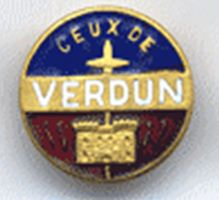
Insigne de l’association « Ceux de Verdun »Il faut dire que Verdun fait partie de ces batailles françaises qui rejoignent le panthéon des conflits symboliques et quasi-mythique tels qu’Azincourt, Fontenoy, Austerlitz, Waterloo, Cameron, Dien-Bien-Phu etc… Pourtant de toutes ces batailles, Verdun – comme symbole du premier conflit moderne armé - résonne comme le glas des dernières règles « courtoises » de la guerre, où la puissance industrielle de l’artillerie remplace le courage individuel.
A la fin de la guerre 14-18 on comptera en France 1,5 millions de morts et 4,3 millions de blessés. Mais on peut aussi rappeler les 2 millions de morts russes et autant d’allemand. Au total ce premier conflit mondial fera 8 millions de morts et 21 millions de blessés. Conscient de la violence des combats de cette « première guerre mondiale », le pouvoir politique français - alors représenté par la III° république (1870-1940) - fut particulièrement prolixe en création de croix de guerre, de médailles militaires, de décorations commémoratives et autres légions d’honneur pour récompenser les survivants de cette souffrance indicible (les morts étant eux absents de ces moisson de récompenses…)
Mais malgré ces ordres et médailles créés par la république français, il semblait dans l’inconscient des soldats Français (Les fameux « poilus ») que la bataille de Verdun se devait d’avoir sa propre décoration, son insigne spécifique, comme pour dire aux autres combattants « j’y étais » ! Ainsi naquis dès les premières heures de la bataille l’idée de créer une médaille spécifique.
Cette création donnera des idées à d’autres associations qui créerons à leur tour et jusqu’à plus de 40 ans après, leur propre médaille associative pour commémorer la participation à d’autres grandes batailles de 14-18 copiée sur la plus prestigieuse d’entre toutes : Celle de Verdun !
Ces différentes distinctions commémoratives (associatives et donc non officielles) des batailles de 14-18 seront créés pour les combats suivants : 1 - La médaille de Château-Thierry (1921), 2 - la médaille de Silésie (1921), 3 - la médaille de Saint-Mihiel (1936), 4 - la médaille de la Marne (1937), 5 - la médaille d’Arras ou d’Artois (1954) 6 - la médaille Commémorative de la bataille de la Somme (1956), 7 - la médaille de Vauquois et de l’Argonne (1961), 8 - la médaille des Rescapés de l’Aisne dites du Chemin des Dames (1967) et enfin 9 - la médaille Commémorative des combats de Champagne (1971).
On trouvera également des médailles associatives moins connues mais qui seront largement distribuées telles que : 10 - La médaille des Batailles de France, 11 - La médaille du Souvenir des batailles de la Somme du Souvenir Français, 12 - La médaille des Anciens Combattants de la Marne, 13 - La croix des Combattants de moins de 20 ans, 14 – La Croix d’Honneur Franco-Britannique et autres médailles d’Unions d’Anciens Combattants ou de la Croix-Rouge. (15 à 18)
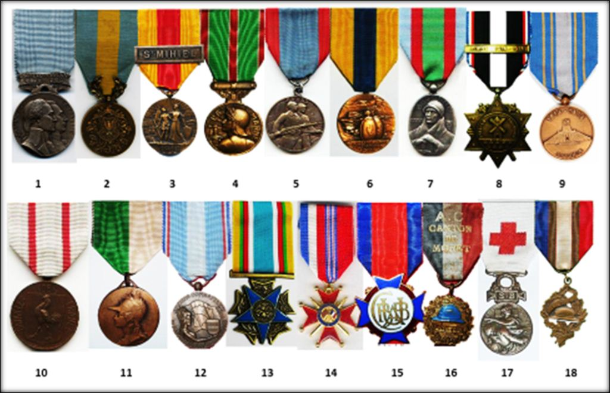
Exemples de quelques médailles commémoratives 14-18 (non officielles)
Origine de la Médaille
Comme nous venons de le voir, en plus des nombreuses croix et médailles officielles, les anciens poilus de 14-18 ont souhaité créer leurs propres médailles spécifiques en souvenir des combats meurtriers auxquels ils avaient participé. Sans doute était-ce pour se rappeler de ce qu’il avait vécu et aussi pour garder en mémoire les camarades tombés à côté d’eux, au champ d’honneur. Il y avait aussi sans doute une revanche inconsciente et bravache sur les « planqués de l’arrière» et à leur montrer ainsi qu’on avait été au « casse-pipe » … Mais de toutes ces médailles c’est celle de Verdun qui fut la première et sans doute la plus importante. L’idée de créer une telle médaille commémorative de la bataille de Verdun est apparue alors même que la bataille n’était pas terminée, conscient que l’humanité vivait dans cette bataille apocalyptique l’un de ses pires cauchemars de la barbarie humaine.
C’est à l’initiative du « Groupement fraternel des évacués et réfugiés Meusiens », groupement de particuliers, que naquit l'initiative de frapper une médaille « dite de Verdun ». En effet, la violence des combats et des bombardements obligea les habitants de la ville de Verdun et des communes avoisinantes, de cette capitale du département de la Meuse d’évacuer au plus vite leurs populations. L’idée philanthropique de cette médaille de Verdun était qu’elle serait vendue au profit des « Meusiens évacués » et qui avaient du tout abandonner. Mais l’association prévoyait également que cette médaille serait accompagnée d'une épigraphe afin de raconter à la postérité ce qu’avait été cette bataille et de lui donner, ainsi, une aura supplémentaire.
La « fraternelle des anciens de Verdun » présenta donc son projet à la municipalité de la ville de Verdun qui était alors elle-même réfugié à Paris. Le Conseil municipal repris avec enthousiasme cette proposition. Un conseil exceptionnel décida de créer cette médaille dès le 20 novembre 1916, soit 9 mois à peine après le début de la bataille de Verdun.
S’agissant d’une initiative municipale et non ministérielle ou nationale, cette médaille n’aurait pas de statut officiel et ne serait donc pas considéré comme une médaille du gouvernement français, mais serait considérée comme l'insigne non-officiel des « Poilus de Verdun ».
Dès le départ de sa création, il fut décidé que seuls les « anciens combattants des armées françaises ou alliées qui se sont trouvés en service commandé entre le 31 juillet 1914 et le 11 novembre 1918 dans le secteur de Verdun, compris entre l'Argonne et Saint-Mihiel dans la zone soumise au bombardement par canon » auraient droit à recevoir cette médaille,
De surcroit, les noms, prénoms, grades et N° de régiments des soldats recevant cette distinction seraient inscrits sur le registre qui sera déposé – après-guerre - dans la crypte du monument à la victoire élevé en plein centre-ville ainsi que sur le livre d’or de la ville qui serait entreposé au musée de la guerre de la Ville de Verdun, et qui est toujours consultable de nos jours.
A l’origine, la médaille de Verdun devait être une simple médaille de table vendue dans une pochette de cuir avec un document explicatif, mais comme nous allons le voir elle deviendra rapidement une vrai médaille que porteront fièrement de nombreux « anciens de Verdun ». Et le succès même de cette médaille fut tel que, dès le début, de nombreux graveurs et maisons proposeront à leur tour leur propre modèle de médaille.
Caractéristiques de la médaille
La ville de Verdun décida que l’insigne de la « médaille de Verdun » serait une médaille ronde en bronze, d'un diamètre de 27 mm. Elle sera en réalité également proposée en argent ou vermeil poinçonné ou bien même en bronze doré. Cette médaille comporterait sur l'avers la tête de la République casquée tenant un sabre à la main avec au-dessus la légende « On ne passe pas » ((Phrase historique du général Pétain, commandant en chef et « Sauveur de Verdun »). En bas de la gravure on trouve la signature du graveur Emille Vernier (1852-1927). Sur le revers de la médaille, l’artiste a reproduit la façade de la Porte Chaussée de la Citadelle de la ville de Verdun (qui restera miraculeusement débout et symbolisera ainsi la bataille). La citadelle est surmontée du nom de Verdun, entourée de palmes et en bas la date 21 février 1916 rappelle le début de cette bataille.
Par la suite et comme nous le verrons, cette médaille sera suspendue par une bélière à un ruban : rouge (dont il est inutile sans doute de rappeler la signification) bordé de chaque côté de trois petites raies verticales bleu-blanc-rouge rappelant le drapeau national Français.
La médaille était proposée sans bélière dans une petite bourse en cuir ou avec bélière (mais sans ruban) dans des petites boites en carton de différentes couleurs.
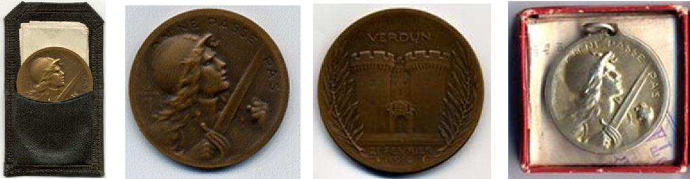
Premières versions des médailles de Verdun dans leur pochette ou leur boite
Dans tous les cas, cette médaille était accompagnée d’un petit dépliant qui disait, en Français ou en anglais, la fameuse épigraphe : « Délibération du Conseil Municipal de Verdun, réuni à Paris le 20 Novembre 1916. Aux grands chefs, aux officiers, aux soldats, à tous. Héros connus et anonymes, vivants et morts, qui ont triomphé de l’avalanche des barbares et immortalisé son nom à travers le monde et pour les siècles futurs. La Ville de Verdun, inviolée et debout sur ses ruines dédie, cette médaille, en témoignage de sa reconnaissance. Paris le 20 Novembre 1916. L’Adjoint faisant fonction de Maire ». Le papier était signé et tamponné au sceau de la ville de Verdun.
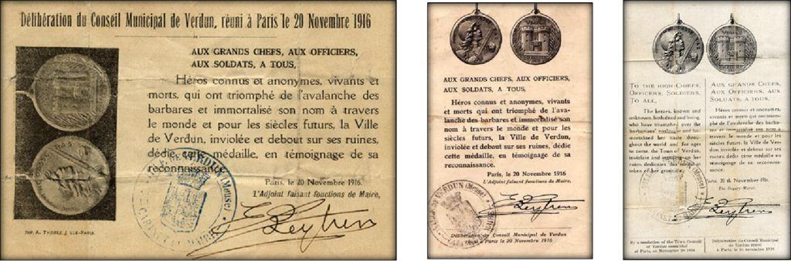
Différents types de prospectus en Français (version horizontale ou verticale) et version bilinge franco-anglaise
Lorsque la médaille de Verdun sera commercialisée avec son ruban à partir de la fin des années vingt, le prospectus sera remplacé par un petit diplôme dont il existe plusieurs modèles et versions. Le document reprend le texte du dépliant d’origine mais ajoute deux citations d’André Maginot, député de la Meuse et Ministre de la Guerre et de Victor Schleiter, député Maire de Verdun. Mais surtout ce diplôme individualise le porteur de la médaille en y rappelant son nom, son prénom, son grade dans l’armée et son régiment d‘affectation lors de la bataille de Verdun. Enfin le diplôme attribue un numéro d’inscription et de registre dans le « Livre d’or des Soldats de Verdun ». Lorsque la médaille fera son apparition, les médailles de tables d’origine seront utilisées par l'association comme médailles de récompense et alors présentées dans un écrin rouge estampé « Verdun ».
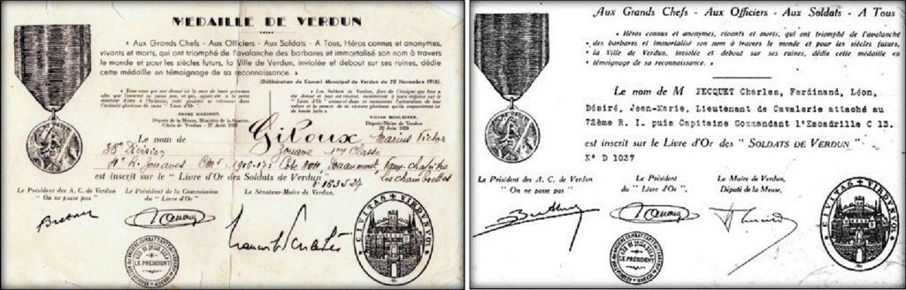
Diplômes de la médaille de Verdun de la fin des années vingt, avec et sans la citation de Maginot et Schleiter
Comme nous venons de le voir, la médaille de Verdun était en réalité à l’origine une simple médaille de table destinée à être exposée chez lui par le titulaire et ce sans que son nom n’apparaisse sur le document qui l’accompagnait.
La grande idée du conseil municipal de Verdun et de l’association, à l’origine de ce projet de médaille associative, « Ceux de Verdun » est d’avoir proposé à ses récipiendaires de faire inscrire dans le livre d’or de la ville, le nom de tous les titulaires de la médaille qui pouvaient légitimement y prétendre. C’est à ce moment alors que la diffusion légendaire de cette médaille s’envola !
On ne sera pas étonné que, devant cette notoriété grandissante, de nombreuses maisons de commercialisation de médailles militaires ou de graveurs phaléristes s’associeront à ce mouvement en créant leur propre médaille de Verdun.
Nous allons donc passer en revue les différentes modèles de la médaille de Verdun sans qu’il soit toujours très aisé d’en dater la commercialisation, voir même d’en identifier les auteurs, certains modèles étant diffusés sans nom du graveur.
Les différents modèles de la Médaille de Verdun
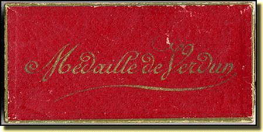
Boite du modèle « officiel » VernierTraditionnellement les spécialistes s’accordent pour indiquer qu’il aurait été frappé 12 modèles de médailles de Verdun différentes. Pour notre part nous n’en avons trouvé que 9 vraiment commercialisés et connus des collectionneurs. Tout ajout à cet article par des lecteurs avisés serait donc le bienvenu. Ces modèles sont les suivants :
Modèle Vernier
Modèle Prudhomme
Modèle Révillon
Modèle Augier
Modèle René (Marie Stuart)
Modèle Steiner
Modèle Rasumny
Modèle Dutemps
Modèle Anonyme 1
Le modèle officiel, la médaille Vernier
La première médaille diffusée par la ville de Verdun était le modèle Vernier. Émile Séraphin Vernier, né à Paris le 16 octobre 1852, décédé à Paris le 9 septembre 1927, est sculpteur et graveur-médailleur français. Sa notoriété lui fera recevoir les insignes de chevalier de la Légion d’honneur en 1903 et d’officier en 1911.
Le modèle Vernier de la médaille de Verdun dont la mairie a donné une explication détaillée (voir plus haut) fut donc le seul modèle diffusé par la ville de Verdun et l’association « ceux de Verdun » chargé d’en faire la promotion. Ce modèle fit alors immédiatement office de modèle officiel et les anciens poilus lui attribuaient plus de valeur qu’à tous les autres modèles. De nos jours, c’est toujours ce modèle qui est proposé par l’association « Ceux de Verdun ». Le modèle Vernier peut être proposé avec une bélière à boule ou à anneau voir même tronconique.
Nous présentons ci-dessous les différents modèles qui ont été réalisés. Certains portent les exergues « Aux glorieux défenseurs de Verdun », ou bien « En avant jusqu’au bout » et encore « aux héros de Verdun » marquant ainsi la volonté de rappeler le courage extraordinaire dont fit preuve (des deux côtés) les combattants de cet « l’enfer de Verdun ». Enfin et pour marquer la survivance forte de la symbolique de cette médaille on notera la réédition cette année 2016 de la médaille dite du « modèle René » par les Editions Collections Hachette dans leur dernière publication sur la Grande Guerre diffusée à l’occasion du centenaire du premier conflit mondial, mais qui est en fait une reprise du modèle René.
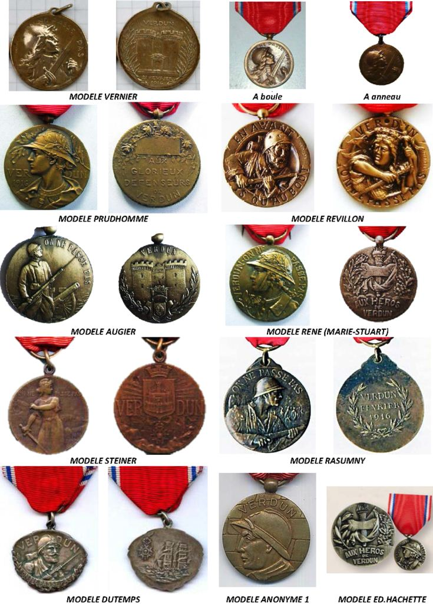
On notera au passage le ruban particulier de la médaille du modèle Dutemps.
Autres modèles
Différents fabricants de médailles de Verdun proposaient avant que les premières agrafes ne firent leur apparition, des insignes métalliques spécifiques à apposer sur le ruban de la médaille. Cela pouvait être les armoiries de la ville de Verdun ou une colombe de la paix tenant dans ses serres le nom de Verdun sur une banderole. Certaines médailles enfin portaient des rubans différents et dont bande blanche centrale était beaucoup plus large. On trouvera aussi des modèles fabriqués aux USA. Enfin, on trouve à l’occasion d’anniversaire de la bataille de Verdun, l’édition de très nombreux modèles de médailles de table (sans ruban). C’est notamment, à titre d’exemple, le modèle du graveur Raymond Delamarre, dites médaille « Journée du Poilu » et éditée à l’occasion de 60ème anniversaire de la bataille de Verdun en 1976.
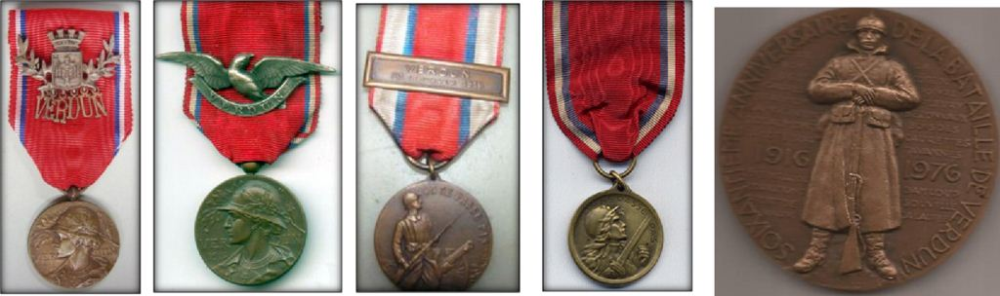
Modèles Prudhommes, modèle Augier, modèle USA et modèle « Journée du Poilu »
Les différents modèles d’agraphie des médailles de Verdun
Enfin comme nous l’avons indiqué précédemment, différentes agrafes, ont fait leur apparition. Cela ne se justifiait pas en tant que tel, car on met des agrafes sur des médailles génériques qui peuvent être attribuées dans différents cas et pour préciser la spécialité militaire ou les campagnes qui justifient la médaille. En l’occurrence s’agissant de la médaille de Verdun, on se doutait forcément qu’elle avait eu lieu à Verdun. Mais on doit y voir plutôt une certaine fierté de porter en gros le nom de cette ville pour les titulaires. Nous n’avons pas référencé tous les types d’agrafes, il y en aurait trop et cela mériterait un article à lui tout seul. Nous en présentons juste une sélection. La plupart portent juste le nom de « Verdun » mais certains portent également la date du début de la bataille, soit le « 21 février 1916 ». Certaines de ces agrafes sont spécifiques aux modèles présentés ci-dessus et d’autres étaient commercialisés par des établissements de médailles (comme les maisons Delande ou Mourgeon) pour s’adapter sur toutes les médailles de Verdun.
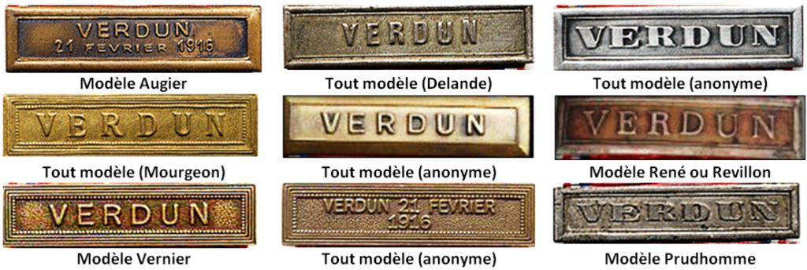
Obtenir la médaille de Verdun pour l’un de ses ancêtres
L’originalité de la médaille de Verdun est que le registre et le livre d’or ouvert au profit des bénéficiaires de la médaille n’est pas forclos, même de nos jours. En conséquence si l’un de vos ancêtres (grand-père, arrière-grand-père, grand-oncle, etc…) a bien participé à la bataille de Verdun pendant l’année 1916 (ils furent plus d’un million et demi à y passer…) et s'il n'a jamais reçu la médaille de Verdun, les héritiers peuvent toujours la demander et ainsi faire enregistrer leur aïeul sur le prestigieux registre. Pour cela il suffit de contacter directement la commission du Livre d’or de l’association « Ceux de Verdun » 2, Rue du Général Hyacinthe Roch 55400 GUSSAINVILLE en remplissant un formulaire prouvant la mobilisation de son ancêtre sur Verdun pendant la première guerre mondiale et en fournissant l’année de mobilisation, le numéro de son Régiment ou de sa Compagnie ainsi que les dates et lieux des séjours dans les secteurs occupés de Verdun. A réception du formulaire et sous réserve d’en apporter la preuve la Commission adressera à l’hériter le diplôme au nom de l’héroïque ancien avec le N° d’inscription sur le livre d’or de la ville et une médaille dite de Verdun moyennant un chèque de 30 euros au nom de l’association (Avant le passage à l’Euro l’insigne était vendue 10 Francs). Pour ma part j’ai fait enregistrer en 2014 mon grand-père maternel, Victor Le Bonniec (1885-1959), blessé à l’attaque de Thiaumont le 11 aout 1916 avec le 48ème Régiment d’infanterie (photo). Il porte désormais éternellement sur le livre d’or des Soldats de Verdun le numéro 197.900. Avis aux amateurs !
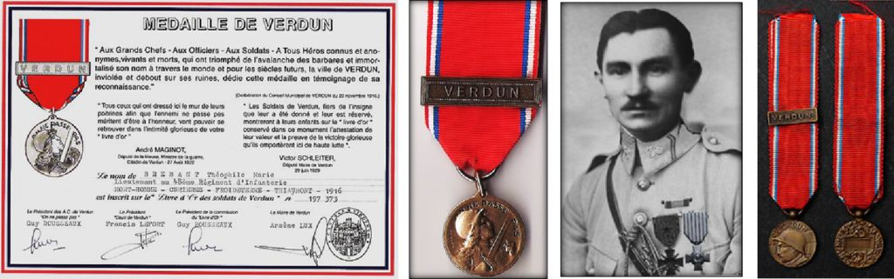
Diplôme actuel de la médaille de Verdun avec sa médaille Vernier (à droite réduction de la médaille)
Verdun, ville la plus décorée de France !
Compte tenu de l’enjeu politico-stratégique de la bataille de Verdun et du martyr de cette ville, on ne sera pas surpris qu’elle compte parmi les villes les plus décorées de France. Elle expose en effet dans son hall d’honneur à côté du livre d’or des combattants de « sa » bataille, les 26 médailles qui lui seront remises par tous les états alliés belligérants entre 1916 et 1929 : Ordre national de la Légion d’honneur, croix de guerre 14-18, Croix de Saint-Georges de Russie, Military Cross de Grande Bretagne, Médaille d’or de la valeur militaire d’Italie, Croix de Léopold 1er de Belgique, Médaille d’or de la bravoure militaire de Serbie, Médaille d’or Obilitch de Monténégro, Ordre de la Tour et de l’épée du Portugal, Sabre d’Honneur du Japon, Sabre aux 9 lions de Chine, Croix de la Liberté de 1ère classe d’Estonie, Croix de Guerre de 1ère classe de Grèce, Médaille de la Vertu Militaire de Roumanie, Croix de Guerre de Pologne, Médaille commémorative en or des Etas-Unis d’Amérique, Ordre du Kim Khan d’Annam, Croix de Guerre de Tchécoslovaquie Croix de la Couronne de Chêne et Médaille des Volontaires du Luxembourg, Médaille d’or de l’ordre royal du Cambodge, Médaille du Mérite Militaire Chérifien du Maroc, Ordre du Nichan Iftikar de Tunisie, Croix du Lacplesis de Lettonie, Ordre du Million d’éléphants et du Parasol Blanc du Laos et Croix de Saint-Charles de Monaco.
La médaille, au ruban de sang, de la bataille de Verdun ne figure pas dans ce panthéon mais elle résume à elle seule toute la tragédie humaine qu’ont vécue - dans la boue et les larmes - ceux qui ont permis qu’ON NE PASSE PAS … !
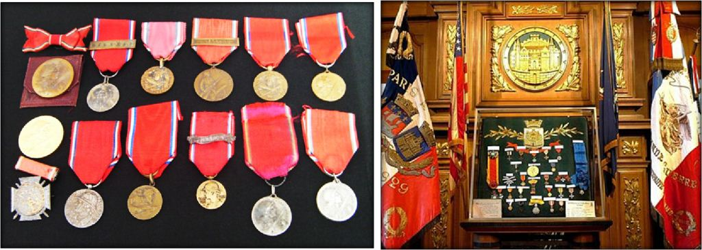
Collection des différents modèles de la médaille de Verdun et hall de la mairie de la ville de Verdun (Meuse)
Verdun ! On ne passe pas
Comme en France « tout se termine par une chanson », nous ne pouvions terminer cet article sans rappeler la belle chanson patriotique sur la bataille de Verdun qui a été écrite par Jules Cazol et Eugène Joullot pour les paroles, René Mercier pour la musique et interprétée par Adolphe Bérard. On retrouvera cette chanson sur youtube : https://www.youtube.com/watch?v=Bj3n02CQJiU
Partager cette page